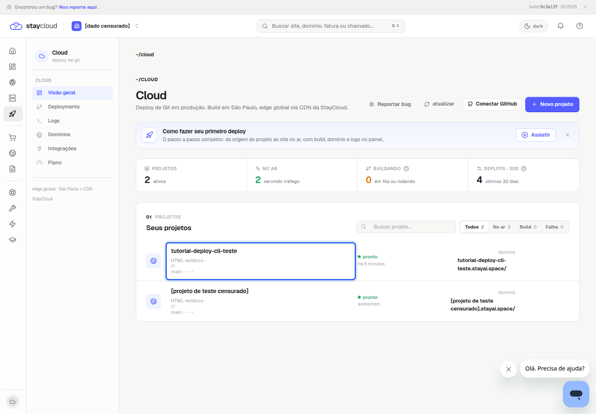
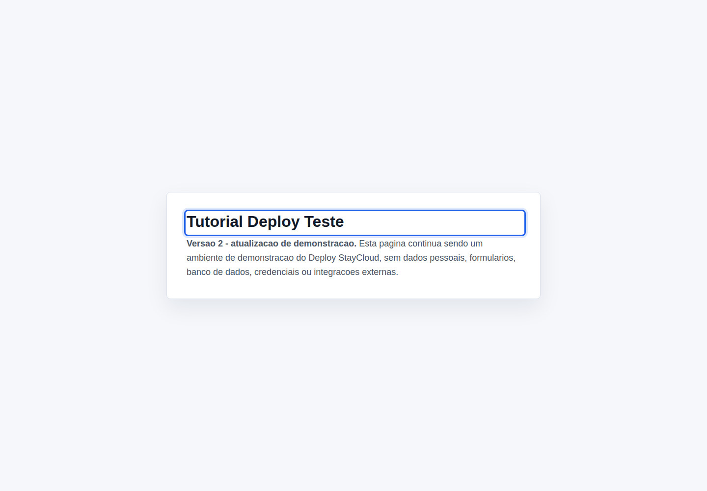
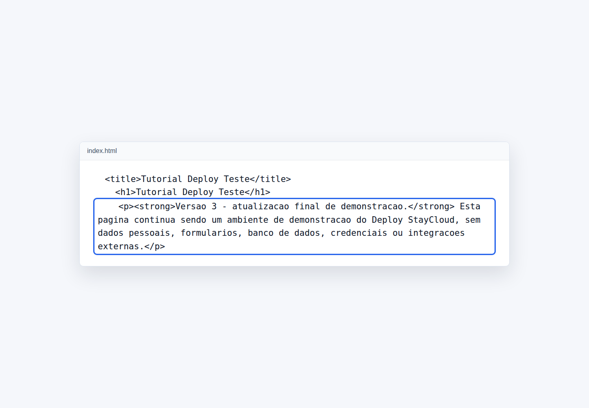
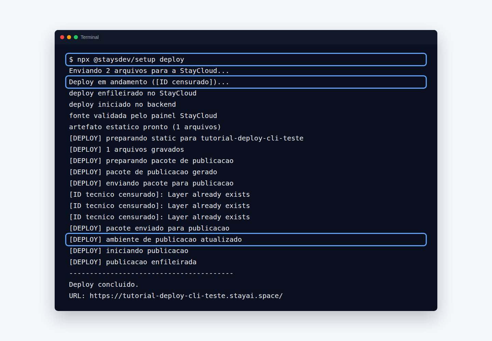
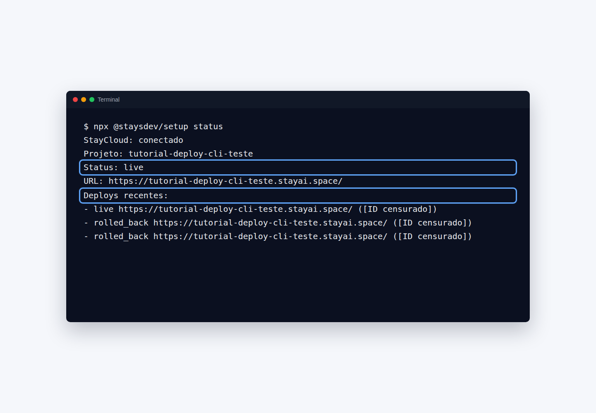
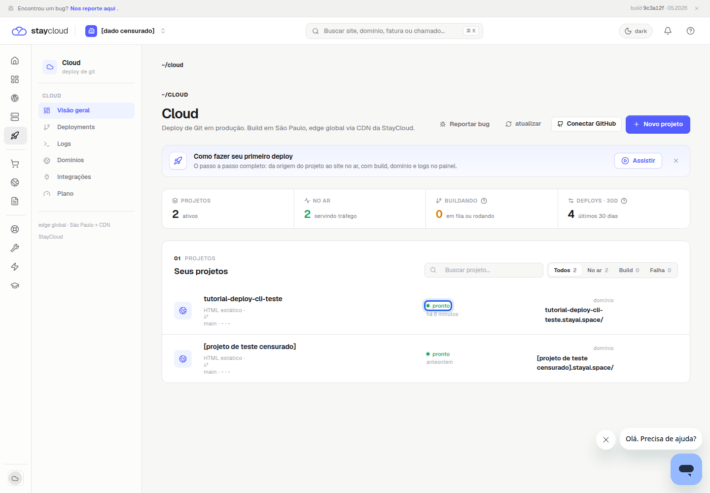
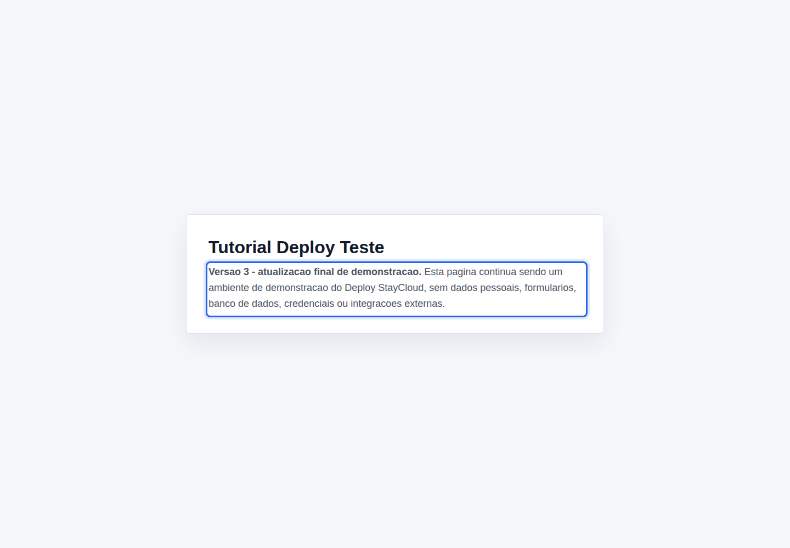

Como publicar nova versão StayCloud pelo Deploy em 5 passos
Publicar nova versão StayCloud é o fluxo usado quando uma aplicação já está conectada ao Deploy e você precisa enviar uma alteração para produção. Neste tutorial, você vai ver como localizar o projeto publicado, fazer uma mudança simples no arquivo do projeto, executar o comando correto pelo terminal e confirmar que a nova versão ficou disponível.
Este passo a passo usa um projeto descartável. Se você ainda não tem uma aplicação publicada, comece por como fazer o primeiro deploy na StayCloud. Para entender o terminal, consulte como instalar e usar a CLI do Deploy StayCloud. Para conferir o resultado, veja como consultar os logs do Deploy StayCloud. Para conhecer a empresa, acesse o site da StayCloud.
Quando publicar uma nova versão da aplicação
Publique uma nova versão quando o projeto já está no ar e você fez uma alteração que precisa aparecer na aplicação publicada. Pode ser uma troca de texto, ajuste visual, correção simples ou atualização de arquivo estático. O ponto principal é que o projeto já deve estar conectado ao Deploy StayCloud; caso contrário, o caminho correto ainda é o primeiro deploy.
No painel validado, o produto aparece em Cloud. A listagem mostra o projeto, o status e a URL pública. O painel também orienta que, para atualizar produção, é necessário fazer um novo deploy.
O que acontece ao fazer um novo deploy
Ao executar o comando de deploy em um projeto já conectado, a CLI envia os arquivos atuais do projeto para a StayCloud. O retorno validado mostrou o envio dos arquivos, o deploy em andamento, a validação da fonte pelo painel, a preparação do pacote de publicação e a mensagem de ambiente de publicação atualizado. Depois disso, a aplicação continuou usando a mesma URL pública e passou a exibir o novo conteúdo.
Esse comportamento foi confirmado em um projeto de teste. Não use este tutorial para alterar aplicações de clientes ou ambientes com variáveis sensíveis sem revisar o impacto antes.
Antes de atualizar o projeto
Antes de iniciar, use apenas um projeto que você reconhece e pode alterar. Revise os arquivos para garantir que não há tokens, chaves, dados pessoais ou integrações indevidas. Depois, salve a alteração local antes de executar o deploy.

Como publicar nova versão StayCloud
1. Abra o projeto publicado
No Painel Novo, acesse Cloud e localize a aplicação que já está publicada. No exemplo validado, o projeto de teste aparece com status pronto. Abra somente o projeto correto, principalmente se a conta tiver mais de uma aplicação na lista.

2. Faça a alteração necessária
No computador, abra o projeto local e altere apenas o necessário. Na validação, foi trocado um texto da página de demonstração. A alteração não incluiu formulário, banco de dados, script externo, token ou variável de ambiente.

3. Execute o comando de publicação
Dentro da pasta do projeto já conectado, execute o comando público da CLI:
npx @staysdev/setup deployEsse foi o método confirmado para atualizar um projeto já vinculado. O comando deploy --new retornou escopo insuficiente neste fluxo, por isso o tutorial usa deploy.

4. Acompanhe o processamento
Aguarde as mensagens do processamento. No fluxo validado, a CLI informou envio dos arquivos, início do deploy, preparação do pacote e ambiente de publicação atualizado. Em seguida, retornou Deploy concluído.

5. Confirme a nova versão
Volte ao painel e confira o status. A listagem mostrou o projeto como pronto, enquanto a CLI mostrou Status: live. Esses sinais indicam que a aplicação está no ar.

Por fim, abra a URL pública e confirme se a alteração apareceu. No teste, a página mostrou o texto novo sem alterar o endereço público do projeto descartável.

Como saber se a atualização foi aplicada
A atualização foi aplicada quando o terminal conclui o deploy, o painel mostra a aplicação como pronta e a URL pública exibe o conteúdo novo. Se algum desses pontos não bater, confira primeiro se você executou o comando dentro da pasta certa e se salvou a alteração antes de publicar.
O que conferir quando a versão antiga continua aparecendo
Se a página continuar mostrando o conteúdo antigo, atualize o navegador e abra a URL novamente. Depois, confira o status do projeto e consulte os logs do Deploy StayCloud. Não execute várias tentativas seguidas sem olhar o resultado anterior.
Erros comuns ao publicar uma nova versão
Os erros mais comuns são executar o comando fora da pasta do projeto, tentar atualizar uma aplicação ainda não conectada ou publicar arquivos não revisados. Domínio personalizado, variáveis, rollback e exclusão exigem validações próprias.
Dúvidas frequentes
Preciso gerar um novo projeto para atualizar a aplicação?
Não no fluxo validado. O projeto já estava conectado, então a atualização foi feita com npx @staysdev/setup deploy.
A URL pública muda depois do novo deploy?
No teste validado, a URL pública continuou a mesma e passou a exibir o conteúdo atualizado. Não use essa confirmação para domínios personalizados sem validar o seu caso.
Posso usar esse fluxo em projeto de cliente?
Não sem autorização e revisão. Para tutorial ou teste, use um projeto descartável, sem dados pessoais, segredos, banco de dados ou integração externa.
Conclusão
Para publicar nova versão StayCloud em uma aplicação já conectada, abra o projeto certo, faça uma alteração segura, execute npx @staysdev/setup deploy, acompanhe o processamento e confirme o resultado no painel e na URL pública. Assim, publicar nova versão StayCloud fica restrito ao fluxo básico validado, sem entrar em rollback, domínio, variáveis ou troubleshooting avançado.